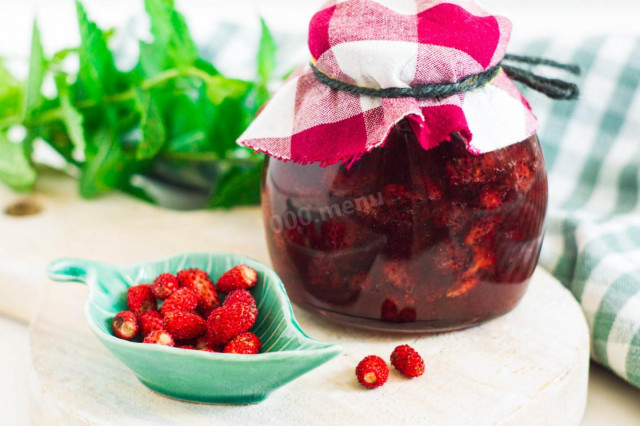
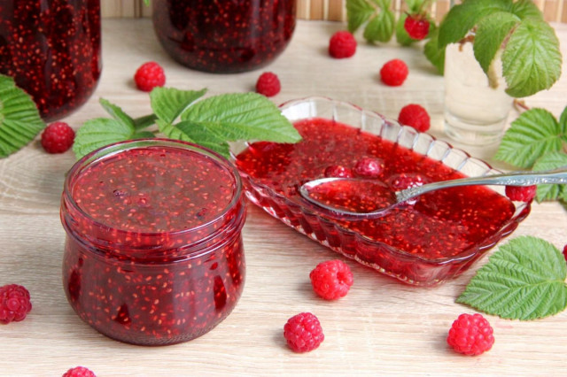
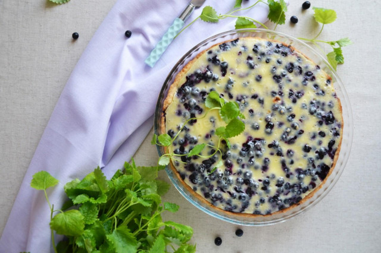

Самые распространенные блюда из ягод – это компоты, варенья, джемы, конфитюры и другие заготовки во всех видах.
Из них делают соки, компоты, морсы, настойки, ликеры и другие напитки. Их добавляют в каши, мюсли, творог, молочные продукты.
В кондитерском деле это идеальный ингредиент для начинки и украшения. Среди блюд с ягодами много свежих салатов и закусок.
Ягодные соусы великолепно сочетаются с жареным или запеченным мясом.
Ниже мы рассмотрим несколько рецептов, такие как: варенье и пироги.
Клубничное варенье
- Наивкуснейшее, ароматное, яркое, солнечное, без стерилизации. Варенье из лесной клубники на зиму варится в два приема. Вам для него потребуются только сами ягоды и сахар. Варенье получается нежным, красивым и очень вкусным!

Малиновое варенье
- Наивкуснейшее, ароматное, яркое, солнечное, без стерилизации. Варенье из лесной клубники на зиму варится в два приема. Вам для него потребуются только сами ягоды и сахар. Варенье получается нежным, красивым и очень вкусным!

Черничный пирог
- Самый настоящий летний пирог! Гостям понравится! В этом пироге просто замечательное тесто! Обычно песочное тесто очень ломкое и крошащееся. Из-за этого пироги сложно перенести на блюдо в целости и сохранности.

Клюквенный морс
- Вкусный и полезный морс из витаминной ягоды! Ещё не пробовали морс из клюквы рецепт приготовить? Если нет, то зря. Хорошая штука, освежает не хуже иного вида морса, а вкус клюквы ощущается в напитке очень явственно.
{kind=link}